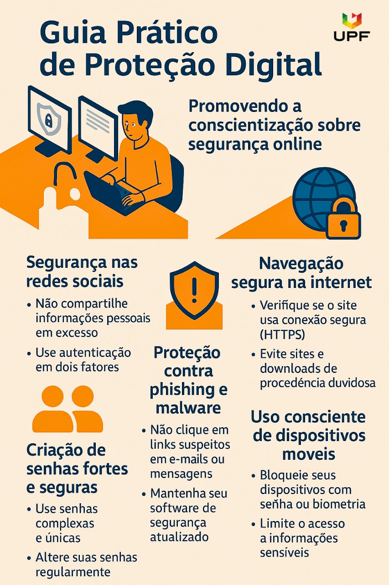

CIBERSEGURANÇA
A segurança da informação é essencial na era digital. Este guia tem como objetivo conscientizar sobre os riscos e práticas de proteção no ambiente online.
Segurança nas Redes Sociais
Evite compartilhar informações pessoais, revise suas configurações de privacidade e use autenticação de dois fatores.
Criação de Senhas Fortes
Use senhas longas e complexas. Nunca reutilize senhas e atualize-as com frequência.
Proteção contra Phishing
Desconfie de mensagens suspeitas. Nunca clique em links ou baixe anexos de remetentes desconhecidos.
Navegação Segura
Verifique se o site usa “https://”. Evite redes Wi-Fi públicas para transações importantes.
Dispositivos Móveis
Proteja com senha ou biometria. Baixe apps somente de lojas oficiais e atualize o sistema.
Privacidade e Dados
Leia as políticas de privacidade e compartilhe apenas o necessário.
Dicas Extras de Proteção Digital
- Ative autenticação em dois fatores.
- Não use a mesma senha em vários sites.
- Evite salvar senhas no navegador.
- Monitore acessos suspeitos nas suas contas.
